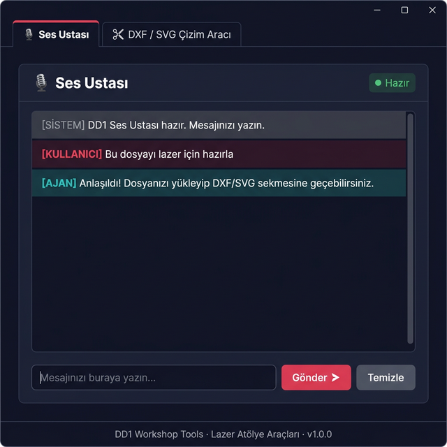
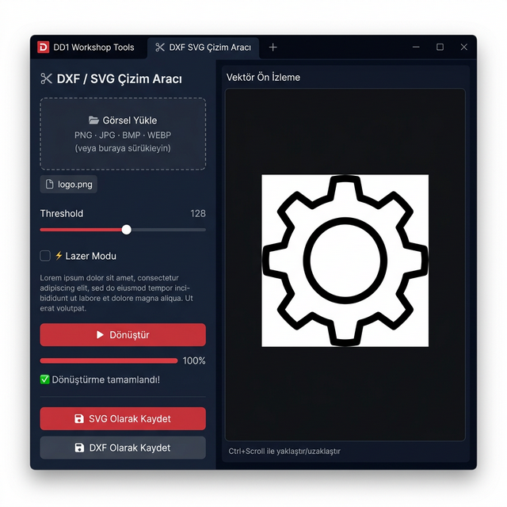
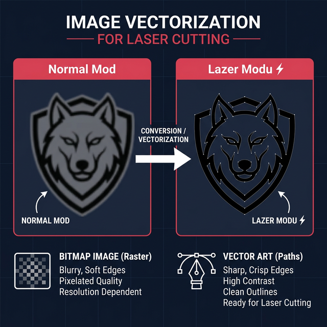
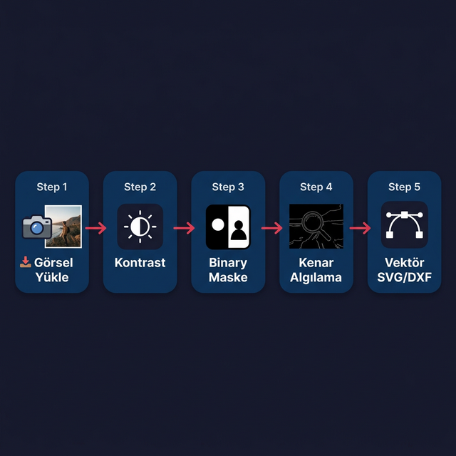

Lazer Kesim Atölyesi için Tasarlanmış Masaüstü Aracı
pip install -r requirements.txtpython main_app.pybuild.bat ile derleyip tek .exe dosyası oluşturabilirsiniz. Detaylar bölüm 7'de.Program açıldığında üstte iki sekme görünür:
| Sekme | Amaç |
|---|---|
| 🎙 Ses Ustası | AI ajan ile metin tabanlı sohbet |
| ✂ DXF / SVG Çizim Aracı | Görsel → Lazer vektörü dönüştürme |
Pencerenin altındaki durum çubuğu her zaman görünür durumdadır ve program adını ile sürüm bilgisini gösterir.

Ses Ustası sekmesi — sohbet tabanlı AI ajan arayüzü
| Bölüm | Açıklama |
|---|---|
| Durum göstergesi | ● Hazır — bekliyor | ● İşleniyor… — yanıt geliyor |
| Sohbet alanı | Tüm konuşma geçmişi, otomatik scroll ile en alta gider |
| Mesaj kutusu | Yazın → Enter veya Gönder ➤ butonuna tıklayın |
| Temizle | Sohbet geçmişini sıfırlar |
| Renk | Etiket | Ne Gösterir? |
|---|---|---|
| ■ | [KULLANICI] | Sizin mesajlarınız |
| ■ | [AJAN] | AI ajanın yanıtları |
| ■ | [SİSTEM] | Durum ve bilgi mesajları |
| ■ | [HATA] | Script hataları |
ai_module.py dosyasını bir metin editörüyle açın ve şu satırı bulun:
AGENT_SCRIPT_PATH = "" # ← buraya scriptinizin tam yolunu yazınÖrnek:
AGENT_SCRIPT_PATH = r"C:\AtolYe\agent.py"
DXF / SVG Çizim Aracı — sol kontrol paneli + sağ vektör ön izleme
Kesik çizgili alana dosyanızı sürükleyip bırakın ya da alana tıklayıp dosya seçin.
Desteklenen: PNG · JPG · JPEG · BMP · WEBP | Maks: 4096 × 4096 px
Slider ile 0–255 arasında bir değer seçin. Başlangıç önerisi: 128.
| Değer | Etki |
|---|---|
| 0 – 80 | Yalnızca çok koyu alanlar — ince detaylar |
| 128 | Dengeli — çoğu görsel için ideal |
| 200 – 255 | Geniş koyu alanlar — kalın konturlar |

Sol: Normal Mod → Sağ: Lazer Modu (daha keskin konturlar)
| Mod | Ne Yapar? | Ne Zaman? |
|---|---|---|
| Normal | Otsu threshold | Sade logolar, net renk ayrımı |
| ⚡ Lazer Modu | Adaptif threshold + güçlü Canny | Karmaşık detaylar, düşük kontrastlı görseller |
Butona basın. İşlem arka planda çalışır — program askıya girmez.
Tamamlandığında SVG vektör sağ panelde görünür.
🖱 Sol tık + sürükle → kaydır | ⌨ Ctrl + Scroll → yaklaştır / uzaklaştır

5 aşamalı otomatik dönüştürme süreci
| Buton | Format | Uyumlu Programlar |
|---|---|---|
| 💾 SVG Olarak Kaydet | SVG (vektör) | Inkscape, Adobe Illustrator, web tarayıcılar |
| 💾 DXF Olarak Kaydet | DXF R2010 | CorelDRAW, AutoCAD, lazer kesim yazılımları |
Dosya → İçe Aktar (Import) kullanın. Aç (Open) değil.✅ Arka plan tamamen kaldırılmış ✅ Sadece dış kontur ve delikler ✅ Gri ton yok, gradient yok ✅ Kapalı path yapısı ✅ Lazer kesime optimize
Programı internetsiz herhangi bir Windows bilgisayarda çalışacak tek bir .exe dosyasına dönüştürmek için:
cd c:\Users\DDSOUND\Desktop\exemiz\dd1_workshop_tools
.\build.batDerleme tamamlandığında:
dd1_workshop_tools\
└── dist\
└── DD1_Workshop_Tools.exe ← bu dosyayı paylaşın 🎯.exe dosyası Python gerektirmez, herhangi bir Windows 10/11 bilgisayarda çalışır.Threshold değerini düşürün (128'in altına). Görseliniz açık renkliyse Lazer Modunu açın ve tekrar dönüştürün.
Dosya → Aç değil, Dosya → İçe Aktar (Import) kullanın. Format R2010 DXF seçin.
4096×4096 üzeri görseller otomatik küçültülür. Çok büyük dosyalar için görseli önceden boyutlandırın.
ai_module.py içindeki AGENT_SCRIPT_PATH boşsa Demo Mod aktiftir.
Gerçek scripti bağlamak için bu değişkeni güncelleyin.
pip install -r requirements.txt| Kütüphane | Amaç | Sürüm |
|---|---|---|
PyQt6 | Masaüstü arayüz (UI) | ≥ 6.6 |
opencv-python-headless | Görsel işleme (threshold, kenar algılama) | ≥ 4.9 |
Pillow | Görsel yükleme, format desteği | ≥ 10.0 |
vtracer | Bitmap → SVG vektörleştirme | ≥ 0.6 |
ezdxf | SVG → DXF dönüştürme | ≥ 1.3 |
numpy | Matris / dizi işlemleri | ≥ 1.26 |